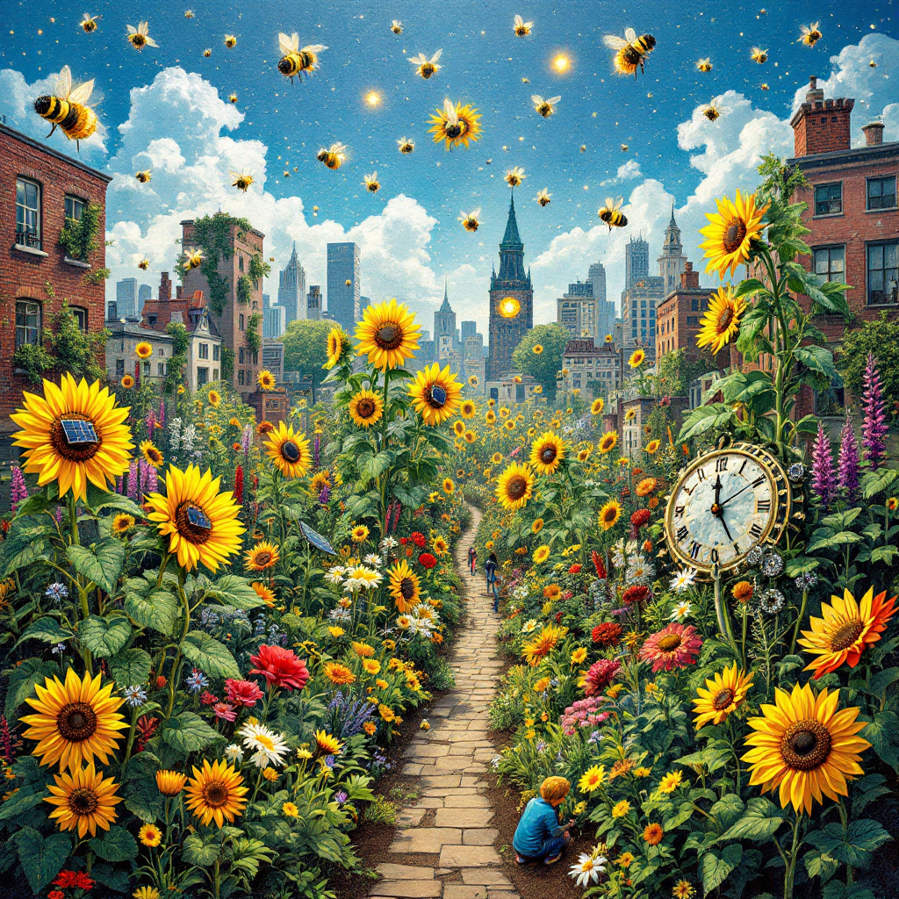

Volunteers collect plastic waste under a surreal aurora, trash rearranges into a glowing coral reef inhabited by translucent neon sea creatures, aurora shifts hues in response to debris removal, hyper-detailed, vibrant colors, magical realism style

Rooftop solar panels form a sunflower mosaic, residents’ faces glow within the panels as energy flows into a vibrant grid network, sunbeams morph into golden coins symbolizing economic equity, hyper-detailed, vibrant colors, magical realism style
Fragmented collage of diverse volunteers cleaning a polluted river, trash morphs into origami birds mid-air, luminous fish swim in crystal-clear water reflecting constellations of local landmarks, hyper-detailed, vibrant colors, magical realism style.
Collage of protest signs ('Climate Justice Now!') forming single strand of light, crowd faces shimmer as constellations linked by glowing threads, signs emit light beams merging into a central victory star, hyper-detailed, vibrant colors, magical realism style.
Mosaic of urban garden plots tended by diverse ages/cultures, surreal plant hybrids (sunflowers with solar-panel petals, vegetable vines growing clock gears), bees carrying glowing pollen between flowers, grassroots sustainability symbolism, hyper-detailed, vibrant colors, magical realism style.

Mosaic of urban garden plots tended by diverse ages/cultures, surreal plant hybrids (sunflowers with solar-panel petals, vegetable vines growing clock gears), bees carrying glowing pollen between flowers, grassroots sustainability symbolism, hyper-detailed, vibrant colors, magical realism style.
Diverse hands planting a sapling with roots morphing into a glowing world map, intricate bark textures reveal faces of activists (Greta Thunberg, Indigenous leaders), surreal bioluminescent flowers bloom with ethereal light, global unity symbolism, hyper-detailed, vibrant colors, magical realism style.
Create a magical realism scene featuring a group of diverse activists standing directly in front of the Statue of Liberty on Liberty Island. The activists are positioned on the same level as the statue's base, facing the camera, holding vibrant banners with bold slogans such as "Protect Our Planet" and "Green Futures Now," along with lush green plants that emit a soft, bioluminescent glow, symbolizing hope and renewal.
The Statue of Liberty stands tall and majestic in the background, her torch illuminating the sky with a warm golden light. The activists are bathed in this radiant glow, creating a powerful sense of unity and purpose. Behind them, the ocean stretches out, and majestic whales breach the water's surface, their massive forms rising gracefully into the air like guardians of nature. These whales appear to defy gravity, hovering mid-leap, with droplets of water transforming into sparkling motes of light before dissolving into the atmosphere.
Incorporate rich yet muted colors—deep greens, warm golds, serene blues, and earthy tones—to evoke harmony between humanity and nature. Add subtle surreal touches, such as faint outlines of tree roots spreading across the pedestal of the Statue of Liberty, connecting her to the soil below, or tiny fireflies dancing around the activists and plants. Ensure the composition includes intricate details like glowing leaves on the plants, shimmering scales on the whales, and delicate shadows cast by the activists, enhancing the sense of wonder and quiet determination.
The overall atmosphere should be ethereal, with wispy clouds tinged with hints of iridescence and a warm, golden light filtering through the sky. Emphasize unity, resilience, and the power of collective action while maintaining a poetic, emotionally resonant tone. The final image should feel both grounded in reality and lifted by imagination, capturing the essence of magical realism.
Community-built bridge of upcycled materials (plastic bottles, tires) spanning a polluted gorge with industrial haze, local wildlife (eagles, deer) inspecting the structure, bridge glows brighter as people cross, hyper-detailed, vibrant colors, magical realism style
Create a visually striking composition in the style of magical realism, combining a collage/mosaic aesthetic with symbolic imagery to celebrate community action and activism. The artwork centers around a vibrant mosaic made up of diverse faces and hands, each piece intricately connected to form a unified whole. Some hands are depicted holding saplings or tools for planting, while others cradle glowing orbs of light, symbolizing hope and positive change.
Incorporate local landmarks—such as a historic building, bridge, or park—as part of the background, subtly integrated into the mosaic to symbolize unity within the community. Surround these elements with lush greenery, including blooming flowers and young trees sprouting from the ground, their petals shimmering faintly with bioluminescent hues. Small details, such as tiny fireflies hovering near the blooms or water droplets glistening on leaves, add a touch of magic.
Infuse the scene with a warm, golden glow, suggesting dawn breaking over the horizon—a metaphor for new beginnings. Use rich colors like deep greens, earthy browns, and radiant yellows to evoke harmony between humanity and nature. Add surreal touches, such as roots spreading outward from the base of the mosaic, intertwining with the figures and landmarks to emphasize interconnectedness.
The overall mood should inspire awe and motivation, highlighting the power of collective action. Ensure the design feels dynamic yet grounded, encouraging viewers to see themselves as active participants in creating meaningful change.
Ancient tree with bark composed of layered protest posters and faces of activists, roots extending into soil labeled with policy milestones ('Paris Agreement'), leaves unfurl into glowing microphones and megaphones, hyper-detailed, vibrant colors, magical realism style.
Mosaic of wind turbines framed by community portraits, turbine blades spin into infinity with mirrored reflections of local landmarks, glowing sound waves emanate from the turbines harmonizing with birdsong, hyper-detailed, vibrant colors, magical realism style
Magical floating market with vendors trading cleaned-up trash (plastic bottles transformed into glowing lanterns), mangrove roots sprouting from recycled bins, children’s touch transforms debris into vibrant art installations, circular economy symbolism, hyper-detailed, vibrant colors, magical realism style
Children planting saplings that instantly grow into towering trees with kaleidoscopic bark, glowing hand imprints marking trunks, shadows of extinct animals flicker among the foliage, intergenerational stewardship symbolism, hyper-detailed, vibrant colors, magical realism style
A chain of diverse hands passes water buckets to extinguish a wildfire, water morphs into a river teeming with origami-style wildlife (cranes, fish), the river flows uphill toward a thriving forest with glowing flora, hyper-detailed, vibrant colors, magical realism style
Hundreds of diverse hands cradle a levitating cityscape with wind turbines
and green rooftops, glowing landmarks (Eiffel Tower, Sydney Opera House) embedded in eco-architecture, rhythmic energy pulses emanate from the city core like a heartbeat, hyper-detailed, vibrant colors, magical realism style
World map composed of overlapping handprints labeled with environmental victories ('Banned Plastic Bags,' 'Reforestation Milestones'), handprints bloom into glowing flowers when touched by pledging hands, hyper-detailed, vibrant colors, magical realism style